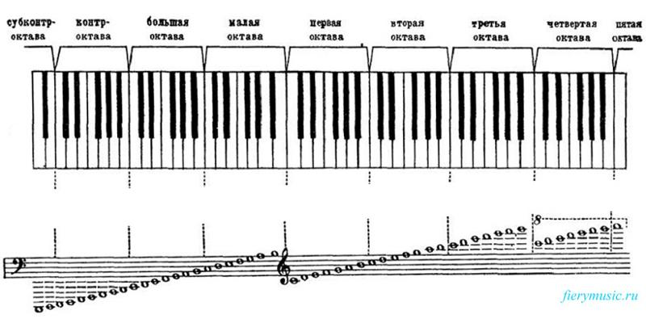
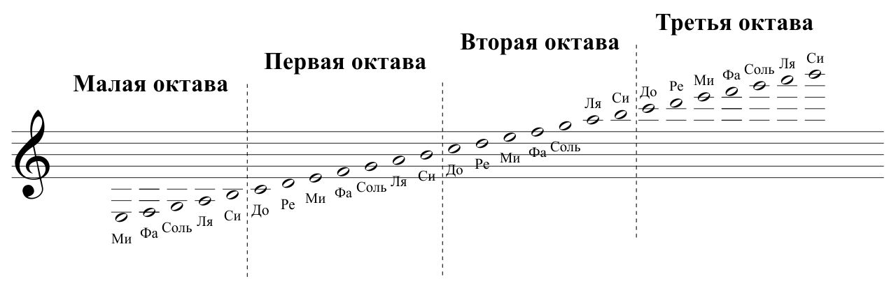

Урок 22. Ноты малой и большой октавы.
Теория
Малая и большая октавы — это диапазоны нот, которые звучат ниже первой октавы и используются для записи низких звуков в музыке.
- Ноты малой октавы: До, Ре, Ми, Фа, Соль, Ля, Си малой октавы. Они записываются ниже нот первой октавы и часто встречаются в басовом ключе.
- Ноты большой октавы: До, Ре, Ми, Фа, Соль, Ля, Си большой октавы. Это самые низкие ноты, которые обычно используются для басовых инструментов и левой руки в фортепиано.
- В малой и большой октавах звуки звучат густо и глубоко, придавая музыке насыщенность.
Для записи нот малой и большой октавы часто используется басовый ключ.
Знание расположения нот в этих октавах важно для чтения басовых партий и игры на инструментах с широким диапазоном.
В упражнениях для левой руки на фортепиано часто встречаются ноты малой и большой октавы.
Упражнения
- Распознавание октавы: Определите, к какой октаве относится нота (До малой октавы — ниже До первой октавы; Соль большой октавы — одна из самых низких нот; Ми малой октавы — встречается в басовом ключе).
- Пение или игра: Пропойте или сыграйте ноты малой и большой октавы (До, Ре, Ми, Фа, Соль, Ля, Си).
Аудио-примеры
Звучание нот малой октавы:
Звучание нот большой октавы:
Визуальные примеры
Ноты малой и большой октавы на нотном стане:

Расположение нот на клавиатуре:
